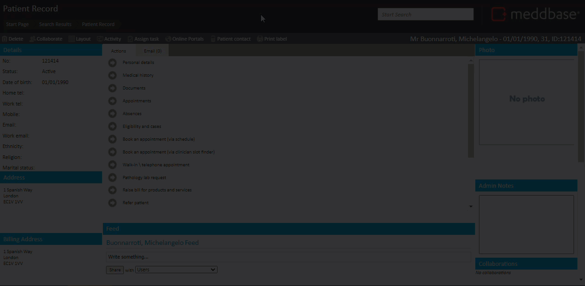
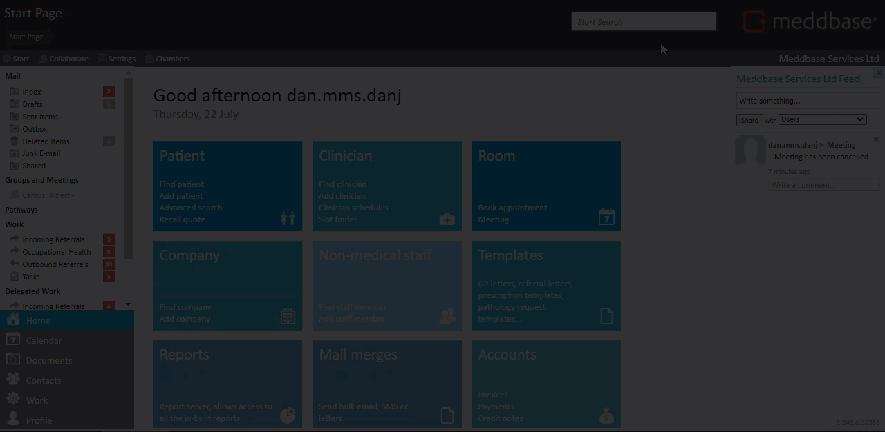
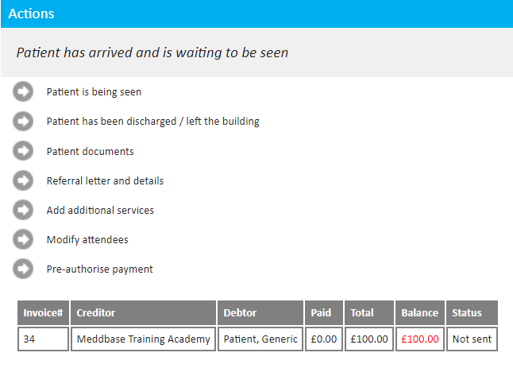

This article outlines
There are two ways to arrive a patient. These are outlined below
To do this:
The patient is marked arrived and waiting to be seen. This is shown in the short video below.

To do this:
The patient is marked as arrived and waiting to be seen. This is shown in the short video below.

When the arrival has been confirmed (via either method noted above) this action cannot be undone.
Clicking the 'Patient has Arrived' button changes the state of the appointment and carries out a range of actions:
| No. | Actions carried out by the system on patient arrival |
| 1. | Notifies the system that the patient has arrived and logs this against the patient record. |
| 2. | Generates a case to which appointment notes can be added if one had been assigned before the appointment was arrived. |
| 3. | Generates the initial invoice and adds it to the patient record or 3rd party payer (depending on the configuration for invoice generation, set in Admin > Configuration > Accountancy). |
| 4. | Prevents any change to the creditor or debtor on the invoice. (Services and service prices can still be altered). |
| 5. | Allows new invoices to be raised through the addition of more services (You can click on Add additional services from the Appointment Home page to do this). |
| 6. | The Actions pane is updated to show that the patient has arrived and provides you with new actions based on this status as shown below. |

Once the patient has been sent through to the clinician they may click ‘Patient is being seen’ to begin the consultation. Alternatively, the patient can be discharged immediately.
If you are using the appointment workflow, after arriving the patient, you will need to change the status to "Patient is being seen" before being able to review the invoice, or access the consultation.
Once you have sent the patient through, you will be taken to the appointment overview page. This page displays the invoice, appointment details and activity.
If you are a non-medical user, and try to access the consultation, you will be taken directly to the Appointment admin page that displays the invoice.
If you are a medical user and access the consultation page, you will be taken into the consultation where clinic notes and medical history reviews can be carried out.